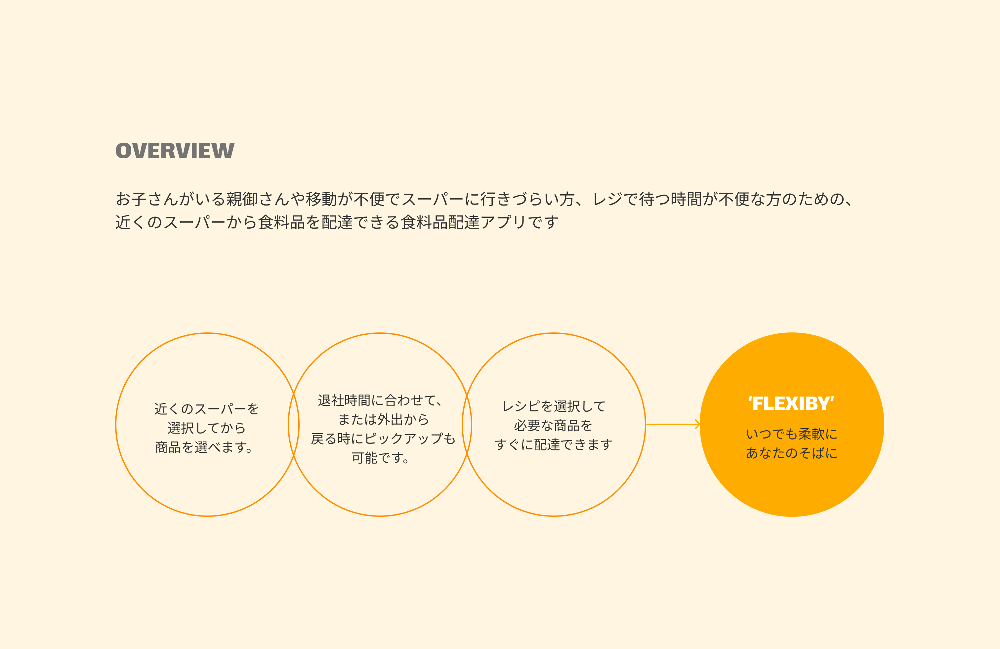
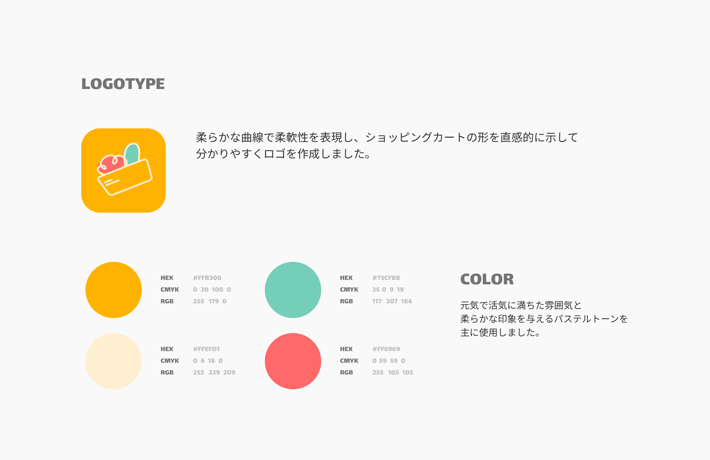
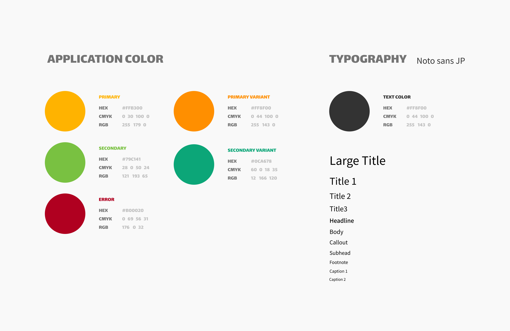
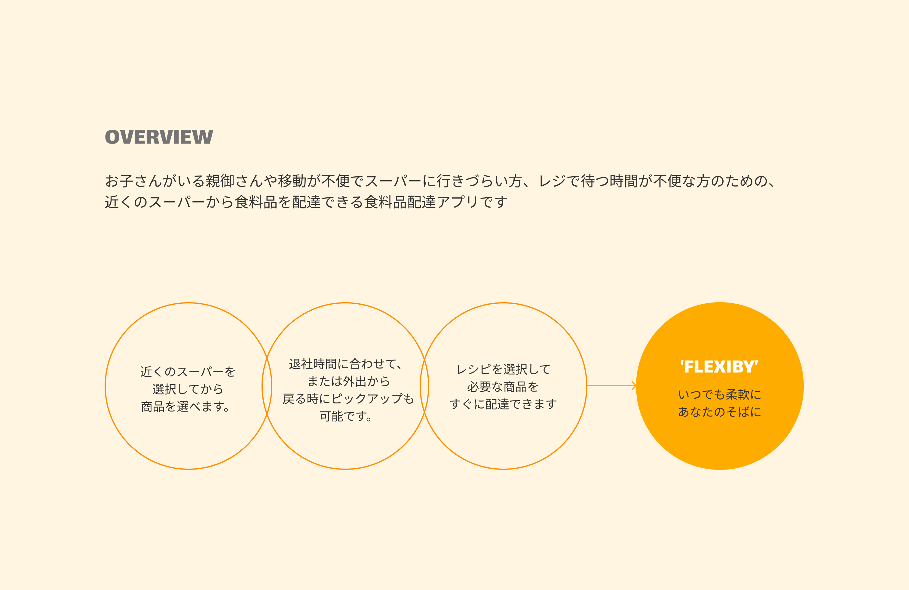
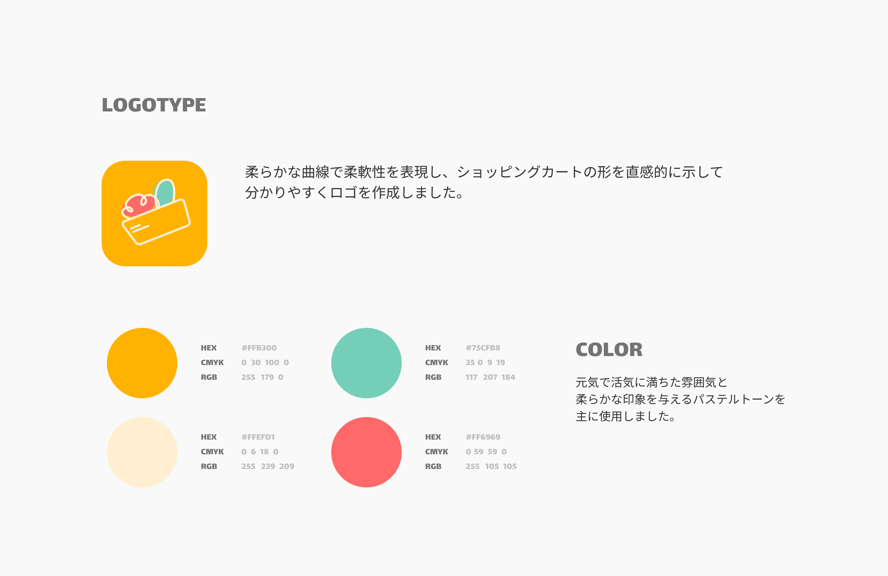
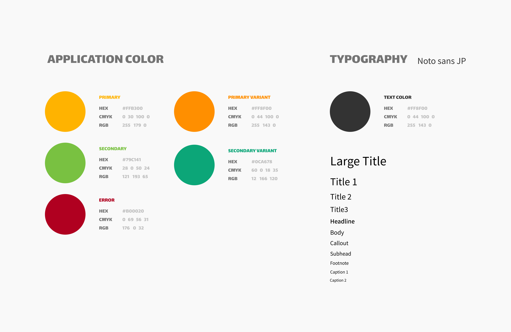
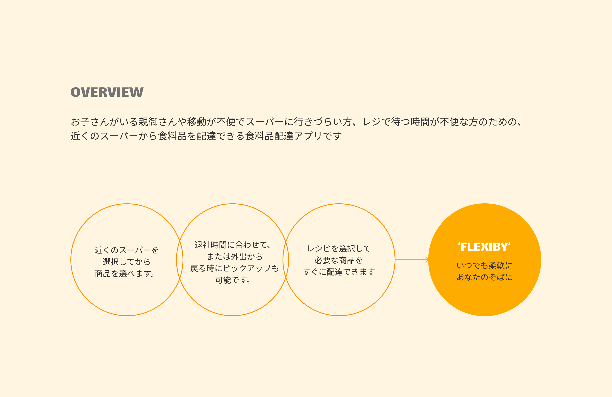
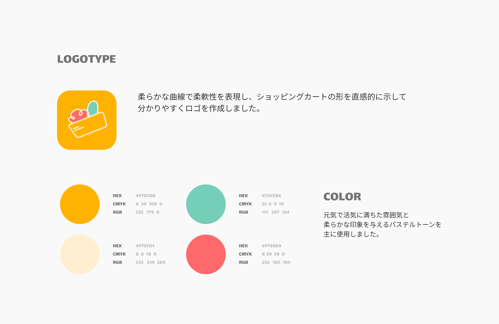
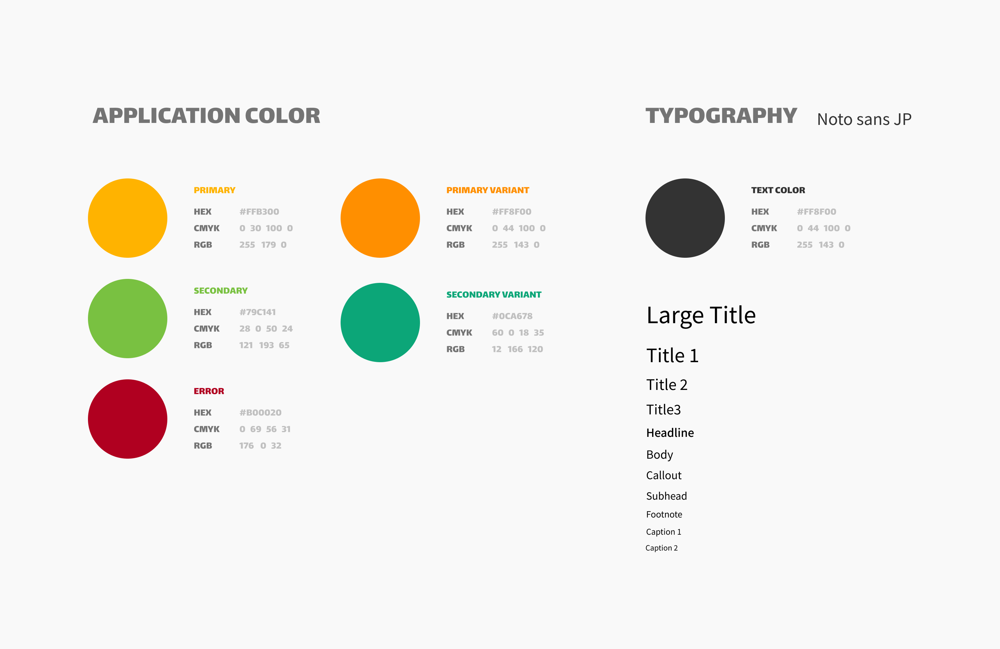
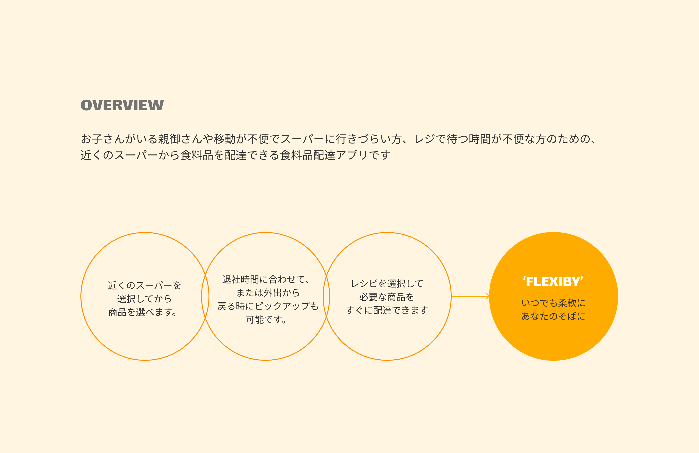
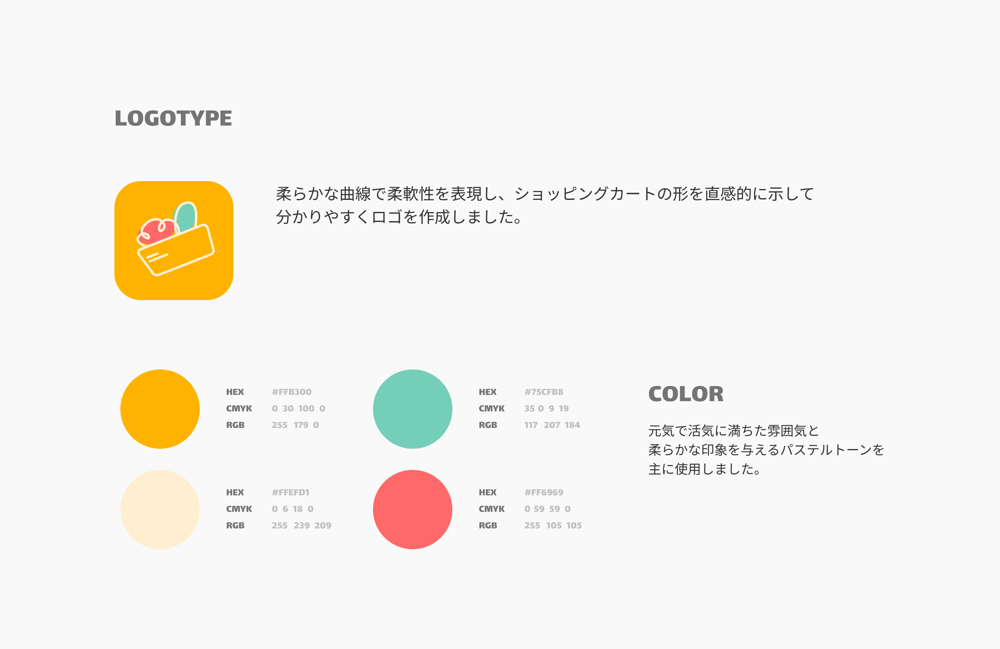
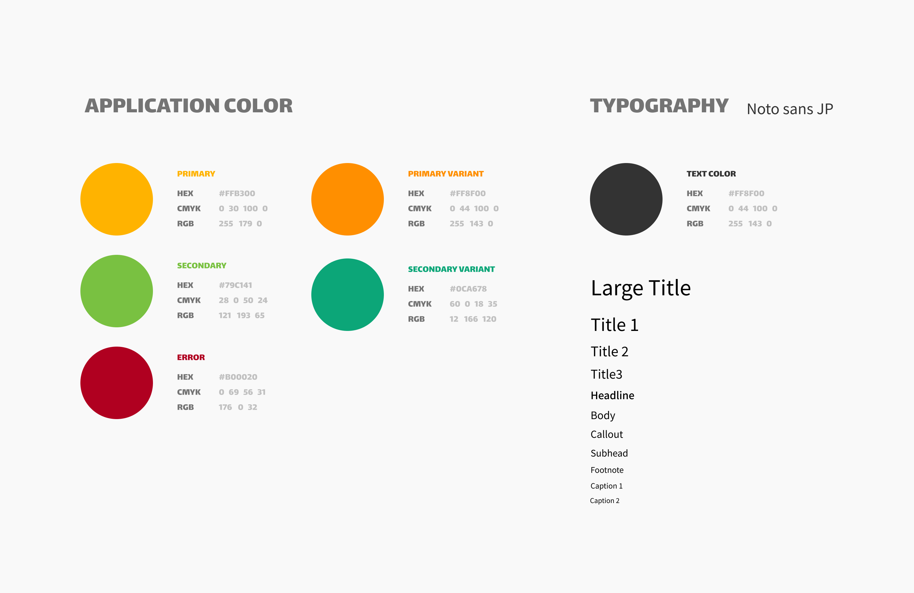
可愛らしいイラストのカテゴリーと
距離順に並んだ店舗を順番に表示して、
食料品配達というコンセプトを簡単に理解できます。
2つの検索ページで構成されて、検索しなかった場合は
おすすめレシピを表示してユーザーの悩みを解消します。
商品を検索した場合は、その商品のキーワードを持つ店舗を
距離順に表示して、簡単に複数の商品を比較できます。
今日のおすすめレシピを見て、必要な食材をすぐに
チェックして注文できます。
ユーザーとの距離やより多くの
食材を持つ店舗に基づいて、最適な店舗がトップに表示されます。
食材だけでなく、下部には料理手順も見れます。
アプリで店舗が提供する広告チラシを閲覧できます。
閲覧は広告チラシそのままのバージョンと、
商品を見やすく並べたバージョンの2つが提供されます。
広告チラシで商品を見て、クリックして直接カートに
入れることができます。
配達アプリの使いやすさを取り入れて、
アプリを使用する際に違和感や不便さなく、
自然な動きで商品を見て注文までスムーズに続けられます。
店舗のメニューカテゴリーを縦に区切って、
カテゴリーと商品を一括で操作できます
Figmaを使用してアプリケーションのユーザーインターフェース（UI）とユーザーエクスペリエンス（UX）をデザインする過程で、 ユーザーフレンドリーなデザイン、色彩理論、効果的なレイアウト構成などを深く学び、適用しました。
食材配達アプリのデザインを通じて、アイコン、グラフィック、画像などを取り扱い、視覚的表現能力を向上させました。 明瞭で簡潔なデザイン要素を作成するために努力しました。
Figmaを活用したプロジェクトでチームメンバーとの協力能力を向上させ、効率的な作業フローを構築する方法を学びました
ユーザーの要求に応えるため、食材配達アプリの現在のトレンドや好まれるデザインパターンを調査し、適用しました。
プロジェクトの進行中に、継続的なユーザーフィードバックを受け入れ、反映してデザインを継続的に改善する方法を身につけました。